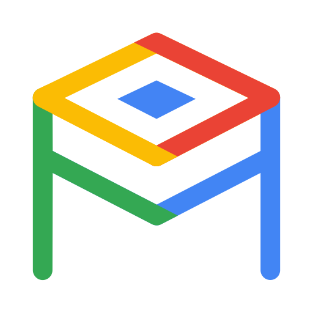
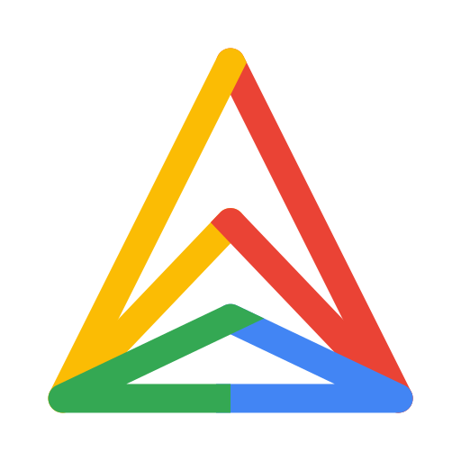
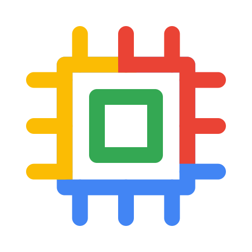
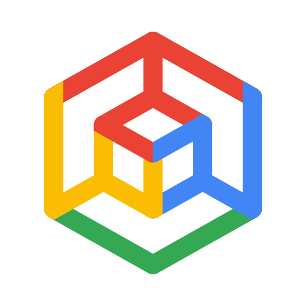
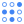

gcp/core/ai-hypercomputer.svg
gcp/core/alloydb.svg
gcp/core/anthos.svggcp/core/apigee.svg
gcp/core/bigquery.svggcp/core/cloud-run.svg
gcp/core/cloud-sql.svggcp/core/cloud-spanner.svggcp/core/cloud-storage.svg
gcp/core/compute-engine.svggcp/core/distributed-cloud.svg
gcp/core/gke.svggcp/core/hyperdisk.svggcp/core/looker.svggcp/core/mandiant.svggcp/core/security-command-center.svggcp/core/security-operations.svggcp/core/threat-intelligence.svggcp/core/vertex-ai.svggcp/legacy/access-context-manager.svggcp/legacy/administration.svggcp/legacy/advanced-agent-modeling.svggcp/legacy/advanced-solutions-lab.svggcp/legacy/agent-assist.svggcp/legacy/ai-hub.svggcp/legacy/ai-platform.svggcp/legacy/ai-platform-unified.svggcp/legacy/analytics-hub.svggcp/legacy/anthos.svggcp/legacy/anthos-config-management.svggcp/legacy/anthos-service-mesh.svggcp/legacy/api.svggcp/legacy/api-analytics.svggcp/legacy/api-monetization.svggcp/legacy/apigee-api-platform.svggcp/legacy/apigee-sense.svggcp/legacy/app-engine.svg
gcp/legacy/artifact-registry.svggcp/legacy/asset-inventory.svggcp/legacy/assured-workloads.svggcp/legacy/automl.svggcp/legacy/automl-natural-language.svggcp/legacy/automl-tables.svggcp/legacy/automl-translation.svggcp/legacy/automl-video-intelligence.svggcp/legacy/automl-vision.svggcp/legacy/bare-metal-solutions.svggcp/legacy/batch.svggcp/legacy/beyondcorp.svggcp/legacy/bigquery.svggcp/legacy/bigtable.svggcp/legacy/billing.svggcp/legacy/binary-authorization.svggcp/legacy/catalog.svggcp/legacy/certificate-authority-service.svggcp/legacy/certificate-manager.svggcp/legacy/cloud-api-gateway.svggcp/legacy/cloud-apis.svggcp/legacy/cloud-armor.svggcp/legacy/cloud-asset-inventory.svggcp/legacy/cloud-audit-logs.svg
gcp/legacy/cloud-build.svggcp/legacy/cloud-cdn.svggcp/legacy/cloud-code.svggcp/legacy/cloud-composer.svggcp/legacy/cloud-data-fusion.svg
gcp/legacy/cloud-deploy.svggcp/legacy/cloud-deployment-manager.svggcp/legacy/cloud-dns.svggcp/legacy/cloud-domains.svggcp/legacy/cloud-ekm.svggcp/legacy/cloud-endpoints.svggcp/legacy/cloud-external-ip-addresses.svggcp/legacy/cloud-firewall-rules.svggcp/legacy/cloud-for-marketing.svg
gcp/legacy/cloud-functions.svggcp/legacy/cloud-generic.svggcp/legacy/cloud-gpu.svggcp/legacy/cloud-healthcare-api.svggcp/legacy/cloud-healthcare-marketplace.svggcp/legacy/cloud-hsm.svggcp/legacy/cloud-ids.svggcp/legacy/cloud-inference-api.svggcp/legacy/cloud-interconnect.svggcp/legacy/cloud-jobs-api.svg
gcp/legacy/cloud-load-balancing.svg
gcp/legacy/cloud-logging.svggcp/legacy/cloud-media-edge.svggcp/legacy/cloud-monitoring.svggcp/legacy/cloud-nat.svggcp/legacy/cloud-natural-language-api.svggcp/legacy/cloud-network.svggcp/legacy/cloud-ops.svggcp/legacy/cloud-optimization-ai.svggcp/legacy/cloud-optimization-ai-fleet-routing-api.svggcp/legacy/cloud-router.svggcp/legacy/cloud-routes.svg
gcp/legacy/cloud-run.svggcp/legacy/cloud-run-for-anthos.svggcp/legacy/cloud-scheduler.svggcp/legacy/cloud-security-scanner.svggcp/legacy/cloud-shell.svg
gcp/legacy/cloud-spanner.svg
gcp/legacy/cloud-sql.svg
gcp/legacy/cloud-storage.svggcp/legacy/cloud-tasks.svg
gcp/legacy/cloud-test-lab.svggcp/legacy/cloud-tpu.svggcp/legacy/cloud-translation-api.svggcp/legacy/cloud-vision-api.svggcp/legacy/cloud-vpn.svggcp/legacy/compute-engine.svggcp/legacy/configuration-management.svggcp/legacy/connectivity-test.svggcp/legacy/connectors.svggcp/legacy/contact-center-ai.svggcp/legacy/container-optimized-os.svggcp/legacy/container-registry.svggcp/legacy/data-catalog.svggcp/legacy/data-labeling.svggcp/legacy/data-layers.svggcp/legacy/data-loss-prevention-api.svggcp/legacy/data-qna.svggcp/legacy/data-studio.svggcp/legacy/data-transfer.svggcp/legacy/database-migration-service.svg
gcp/legacy/dataflow.svggcp/legacy/datalab.svggcp/legacy/dataplex.svggcp/legacy/datapol.svggcp/legacy/dataprep.svggcp/legacy/dataproc.svggcp/legacy/dataproc-metastore.svggcp/legacy/datashare.svggcp/legacy/datastore.svggcp/legacy/datastream.svggcp/legacy/debugger.svggcp/legacy/developer-portal.svggcp/legacy/dialogflow.svggcp/legacy/dialogflow-cx.svggcp/legacy/dialogflow-insights.svggcp/legacy/document-ai.svggcp/legacy/early-access-center.svggcp/legacy/error-reporting.svggcp/legacy/eventarc.svggcp/legacy/filestore.svggcp/legacy/financial-services-marketplace.svggcp/legacy/firestore.svggcp/legacy/fleet-engine.svggcp/legacy/free-trial.svggcp/legacy/game-servers.svggcp/legacy/gce-systems-management.svggcp/legacy/genomics.svggcp/legacy/gke-on-prem.svggcp/legacy/google-cloud-marketplace.svg
gcp/legacy/google-kubernetes-engine.svggcp/legacy/google-maps-platform.svggcp/legacy/healthcare-nlp-api.svggcp/legacy/home.svggcp/legacy/identity-aware-proxy.svggcp/legacy/identity-and-access-management.svggcp/legacy/identity-platform.svggcp/legacy/iot-core.svggcp/legacy/iot-edge.svggcp/legacy/key-access-justifications.svggcp/legacy/key-management-service.svggcp/legacy/kuberun.svggcp/legacy/launcher.svggcp/legacy/local-ssd.svggcp/legacy/looker.svggcp/legacy/managed-service-for-microsoft-active-directory.svggcp/legacy/media-translation-api.svggcp/legacy/memorystore.svggcp/legacy/migrate-for-anthos.svggcp/legacy/migrate-for-compute-engine.svggcp/legacy/my-cloud.svggcp/legacy/network-connectivity-center.svggcp/legacy/network-intelligence-center.svggcp/legacy/network-security.svggcp/legacy/network-tiers.svggcp/legacy/network-topology.svggcp/legacy/onboarding.svggcp/legacy/os-configuration-management.svggcp/legacy/os-inventory-management.svggcp/legacy/os-patch-management.svggcp/legacy/partner-interconnect.svggcp/legacy/partner-portal.svggcp/legacy/performance-dashboard.svggcp/legacy/permissions.svggcp/legacy/persistent-disk.svggcp/legacy/phishing-protection.svggcp/legacy/policy-analyzer.svggcp/legacy/premium-network-tier.svggcp/legacy/private-connectivity.svggcp/legacy/private-service-connect.svggcp/legacy/producer-portal.svggcp/legacy/profiler.svggcp/legacy/project.svggcp/legacy/pubsub.svggcp/legacy/quantum-engine.svggcp/legacy/quotas.svggcp/legacy/real-world-insights.svggcp/legacy/recommendations-ai.svggcp/legacy/release-notes.svggcp/legacy/retail-api.svggcp/legacy/risk-manager.svggcp/legacy/runtime-config.svggcp/legacy/secret-manager.svggcp/legacy/security.svggcp/legacy/security-command-center.svggcp/legacy/security-health-advisor.svggcp/legacy/security-key-enforcement.svggcp/legacy/service-discovery.svggcp/legacy/speech-to-text.svggcp/legacy/stackdriver.svggcp/legacy/standard-network-tier.svggcp/legacy/stream-suite.svggcp/legacy/support.svggcp/legacy/tensorflow-enterprise.svggcp/legacy/text-to-speech.svggcp/legacy/tools-for-powershell.svggcp/legacy/trace.svggcp/legacy/traffic-director.svggcp/legacy/transfer.svggcp/legacy/transfer-appliance.svggcp/legacy/user-preferences.svggcp/legacy/vertexai.svggcp/legacy/video-intelligence-api.svggcp/legacy/virtual-private-cloud.svggcp/legacy/visual-inspection.svggcp/legacy/vmware-engine.svggcp/legacy/web-risk.svggcp/legacy/web-security-scanner.svggcp/legacy/workflows.svggcp/legacy/workload-identity-pool.svggeneric/client.svggeneric/server.svggeneric/router.svggeneric/switch.svggeneric/firewall.svggeneric/load-balancer.svggeneric/dns-resolver.svggeneric/internet.svggeneric/endpoint.svggeneric/database.svggeneric/storage.svggeneric/subnet.svggeneric/vpn.svggeneric/user.svggeneric/event.svggeneric/decision.svggeneric/policy.svggeneric/artifact.svggeneric/outcome.svggeneric/failure.svggeneric/monitoring.svggeneric/queue.svg